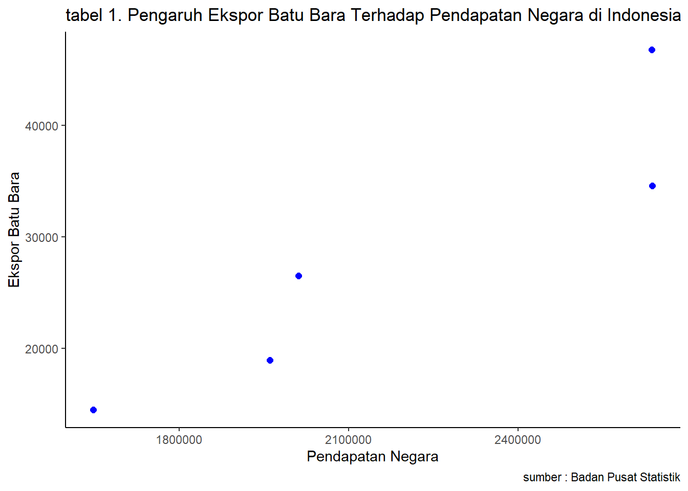

library("tidyverse")
library("readxl")
library("dplyr")Pengaruh Ekspor Batu Bara Terhadap Pendapatan Negara di Indonesia
Metode Penelitian Politeknik APP Jakarta

1 Pendahuluan
1.1 Latar Belakang
Batu Bara merupakan salah satu komoditas ekspor unggulan Indonesia, kandungan energi yang tinggi serta ketersediaannya yang melimpah membuat batubara menjadi pilihan utama untuk memenuhi kebutuhan energi, terutama di sektor pembangkit listrik.
kebutuhan batubara untuk memenuhi permintaan dalam negeri akan berpengaruh pada ekspor batubara ke beberapa negara yang membutuhkan. Indonesia menempatkan diri sebagai salah satu produsen Batu Bara terbesar di dunia, sehingga akan berdampak pada pertumbuhan ekonomi serta pendapatan negara.
Berdasarkan Kementerian Energi dan Sumber Daya Mineral (2016, 2018), pada 2000 hingga 2018 batubara yang diekspor menunjukkan kecenderungan kenaikan dengan porsi yang diekspor rata-rata sekitar 76,4% dan sisanya digunakan dalam negeri. Penelitian ini akan membahas pengaruh ekspor batubara terhadap pendapatan negara di Indonesia tahun 2019 - 2023.
1.2 Ruang Lingkup
Dalam penelitian ini penulis mengambil objek penelitian dari Badan Pusat Statistik Indonesia. Ruang lingkup penelitian ini terdapat 2 Variabel antara lain nilai ekspor batubara di Indonesia dan pendapatan negara di Indonesia. Data yang digunakan adalah data yang bersifat time series yaitu dalam kurun waktu 2019-2023 dengan satuan yang telah diubah ke dalam USD guna untuk memudahkan penyetaraan mata uang secara internasional, data inilah yang kemudian menjadi objek penelitian.
1.3 Rumusan Masalah
Berdasarkan pada latar belakang di atas maka penulis dapat merumuskan masalah penelitian yaitu bagaimana pengaruh Ekspor Batu Bara terhadap peningkatan Pendapatan Negara di Indonesia Tahun 2019-2023?
1.4 Tujuan dan Manfaat Penelitian
Tujuan penelitian ini untuk mengetahui pengaruh Ekspor Batu Bara terhadap Pendapatan Negara di Indonesia Tahun 2019-2023.
Adapun manfaat dari penelitiaan ini antara lain :
- Manfaat Teoritis
Penelitian ini diharapkan menambah ilmu pengetahuan mahasiswa/i dan masyarakat mengenai ekspor dan pendapatan negara di Indonesia.
- Manfaat Praktis
Penelitian ini juga diharapkan dapat digunakan sebagai bahan referensi bagi mereka yang ingin memperdalam tentang kegiatan ekspor dan pendapatan negara. Sekaligus mengetahui seberapa besar pengaruh ekspor batubara terhadap pendapatan negara di Indonesia
1.5 Package
Ini tidak wajib ada di packages yang digunakan antara lain sebagai berikut:
2 Studi Pustaka
- Ekspor
Ekspor adalah sebuah kegiatan transportasi barang atau komoditas dari suatu negara ke negara lainnya (Amir M.S, 2003:85). Ekspor merupakan kegiatan penjualan dalam bentuk produk unggulan dalam negeri maupun jasa yang diproduksi oleh negara dan akan dipasarkan dalam ranah internasional.
- Pendapatan Negara
Sesuai UU Nomor 17 Tahun 2003, pendapatan negara adalah hak pemerintah pusat yang diakui sebagai penambah nilai kekayaan bersih yang berasal dari penerimaan negara.
Secara singkat, Ketika suatu negara melakukan ekspor, maka negara tersebut akan mendapatkan devisa atau mata uang asing. Devisa inilah yang kemudian menjadi salah satu sumber pendapatan negara. Jika dilihat dari pernyataan tersebut maka dapat dikatakan bahwa, ekspor yang tinggi akan meningkatkan pendapatan nasional suatu negara.
Akan tetapi, pernyataan tersebut belum valid jika penelitian belum dilakukan atau di uji. Maka penulis akan melakukan penelitian, guna mengetahui pengaruh Ekspor Batu Bara Terhadap Pendapatan Negara di Indonesia.
3 Metode Penelitian
3.1 Data
Berikut merupakan data yang digunakan sebagai objek penelitian. Data dibawah ini merupakan data nilai ekspor batu bara terhadap pendapatan negara di Indonesia.
| Tahun | Ekspor Batu Bara (Juta $) | Pendapatan Negara (Milyar Rupiah) |
|---|---|---|
| 2019 | 18957,2 | 1960633,6 |
| 2020 | 14534 | 1647783,34 |
| 2021 | 26533,1 | 2011347,1 |
| 2022 | 46764,9 | 2635843,1 |
| 2023 | 34592,1 | 2637248,9 |
Penelitian ini menggunakan Ekspor Batu Bara di Indonesia tahun 2019-2023 dan Pendapatan Negara di Indonesia tahun 2019-2023 dari Badan Pusat Statistik (BPS).
Baca data
#import dataset
library("readxl")
gab<-read_excel('gab.xlsx')
head(gab)# A tibble: 5 × 3
Tahun EBB PN
<dbl> <dbl> <dbl>
1 2019 18957. 1960634.
2 2020 14534 1647783.
3 2021 26533. 2011347.
4 2022 46765. 2635843.
5 2023 34592. 2637249.library("ggplot2")
library("readxl")
library("dplyr")
ggplot(data=gab,aes(x=PN,y=EBB))+
geom_point(color="blue",size=2)+
labs(title="tabel 1. Pengaruh Ekspor Batu Bara Terhadap Pendapatan Negara di Indonesia",
x="Pendapatan Negara",
y="Ekspor Batu Bara",
caption = "sumber : Badan Pusat Statistik")+
theme_classic()
3.2 Metode Analisis
Metode yang dipilih adalah regresi univariat atau Ordinary Least Square (OLS) dengan 1 variabel independen. Penelitian ini bermaksud mencari hubungan antara Pendapatan Negara (PN) dan Ekspor Batu Bara (EBB). Spesifikasi yang dilakukan adalah:
\[ y_{t}=\beta_0 + \beta_1 x_t+\mu_t \] di mana \(y_t\) adalah PN dan \(x_t\) adalah EBB.
4 Pembahasan
4.1 Pembahasan Masalah
Dikarenakan peneliti menggunakan OLS, maka fokus yang akan dibahas hanya mengaitkan Pendapatan Negara dan Ekspor Batu Bara. Data tersebut disatukan sehingga menampilkan regresi seperti ini.
#import dataset
library(readxl)
gab<-read_excel('gab.xlsx')
head(gab)# A tibble: 5 × 3
Tahun EBB PN
<dbl> <dbl> <dbl>
1 2019 18957. 1960634.
2 2020 14534 1647783.
3 2021 26533. 2011347.
4 2022 46765. 2635843.
5 2023 34592. 2637249.4.2 Analisis Masalah
Hasil regresinya adalah
reg1<-lm(PN~EBB,data=gab)
summary(reg1)
Call:
lm(formula = PN ~ EBB, data = gab)
Residuals:
1 2 3 4 5
77923 -94500 -111883 -129703 258163
Coefficients:
Estimate Std. Error t value Pr(>|t|)
(Intercept) 1.281e+06 2.284e+05 5.607 0.0112 *
EBB 3.175e+01 7.484e+00 4.242 0.0240 *
---
Signif. codes: 0 '***' 0.001 '**' 0.01 '*' 0.05 '.' 0.1 ' ' 1
Residual standard error: 192300 on 3 degrees of freedom
Multiple R-squared: 0.8571, Adjusted R-squared: 0.8095
F-statistic: 17.99 on 1 and 3 DF, p-value: 0.023995 Kesimpulan dan Saran
5.1 Kesimpulan
Berdasarkan hasil analisis regresi linier sederhana, dapat disimpulkan bahwa terdapat pengaruh yang signifikan antara ekspor batubara dengan pendapatan negara di Indonesia periode 2019-2023. Hal ini menunjukkan bahwa peningkatan ekspor batubara secara langsung berkontribusi terhadap peningkatan pendapatan negara.
Temuan ini sejalan dengan teori ekonomi yang menyatakan bahwa ekspor merupakan salah satu sumber utama pendapatan negara. Dengan kata lain, semakin tinggi nilai ekspor batubara, maka semakin tinggi pula pendapatan negara yang diperoleh.
5.2 Saran
Penulis selanjutnya dapat melakukan analisis dengan menggunakan analisis multivariat untuk mengidentifikasi variabel-variabel lain yang mempengaruhi pendapatan negara selain ekspor batubara, seperti nilai tukar rupiah, harga komoditas global, dan kebijakan fiskal.
6 Referensi
Badan Pusat Statistik (2019-2023). Ekspor Batu Bara Menurut Negara Tujuan Utama, 2012-2023, diakses pada 13 Januari 2025. https://www.bps.go.id/id/statistics-table/1/MTAzNCMx/ekspor-batu-bara-menurut-negara-tujuan-utama-2012-2023.html
Badan Pusat Statistik (2019-2023). Realisasi Pendapatan Negara (Milyar Rupiah), 2022-2024, diakses pada 13 Januari 2025. https://www.bps.go.id/id/statistics-table/2/MTA3MCMy/realisasi-pendapatan-negara.html
Heni Mirdania Putri, Fani Muhammad Yamin, Firqi Hidayat, Fiqih Darmawan, dan Muhammad Kurniawan (2024). Pengaruh Ekspor Migas Dan Non Migas Terhadap Cadangan Devisa Di Indonesia Tahun 2014 – 2023, diakses pada 14 Januari 2025. https://journal.unimar-amni.ac.id/index.php/Wawasan/article/download/2242/1863/6689
ARIF SETIAWAN, ARYO P. WIBOWO dan FADHILA A. ROSYID (2020). ANALISIS PENGARUH EKSPOR DAN KONSUMSI BATUBARA TERHADAP PERTUMBUHAN EKONOMI INDONESIA. https://www.academia.edu/download/103721564/882.pdf
Custom Strade Academy by CTA. Peran Ekspor dan Impor dalam Mendukung Pertumbuhan Ekonomi Negara Berkembang, diakses pada 14 Januari 2025. https://ejournal.uksw.edu/ecodunamika/article/download/4051/1553/16608
CAROLINA, Lauria Tika and AMINATA, Jaka (2018). ANALISIS DAYA SAING DAN FAKTOR YANG MEMPENGARUHI EKSPOR BATU BARA. http://eprints.undip.ac.id/68292/